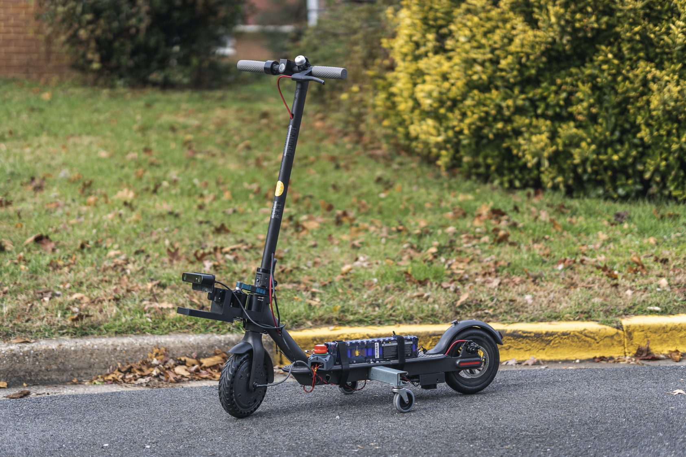
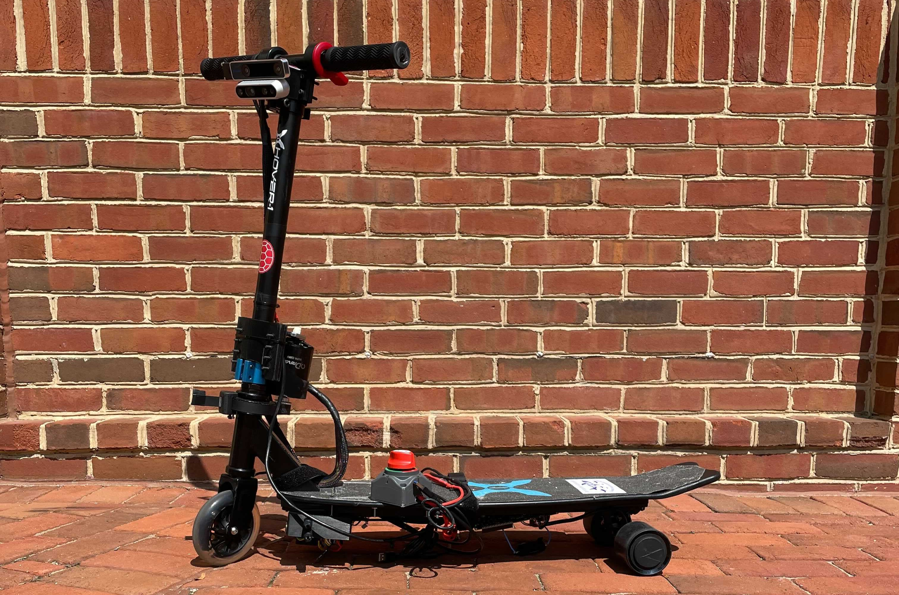
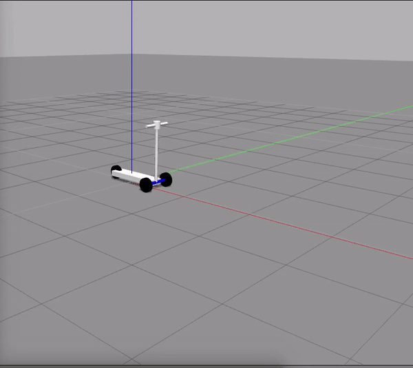
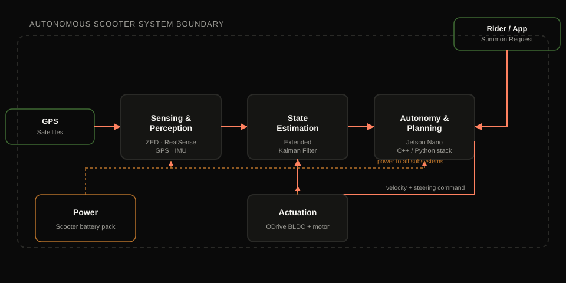
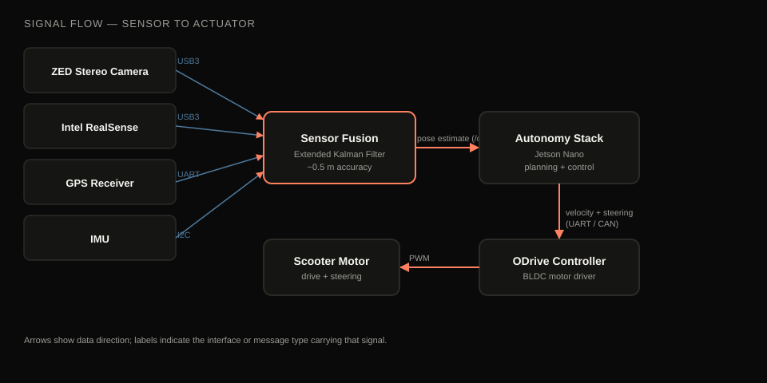
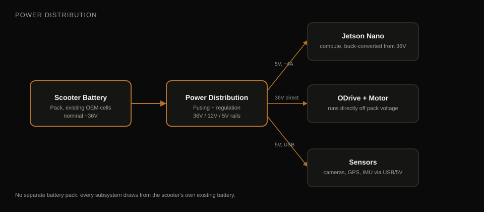
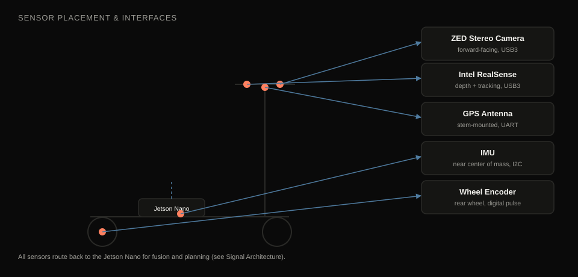
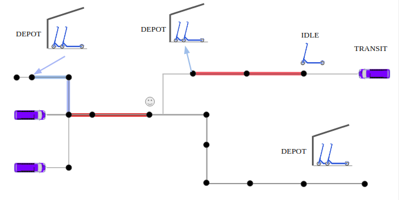
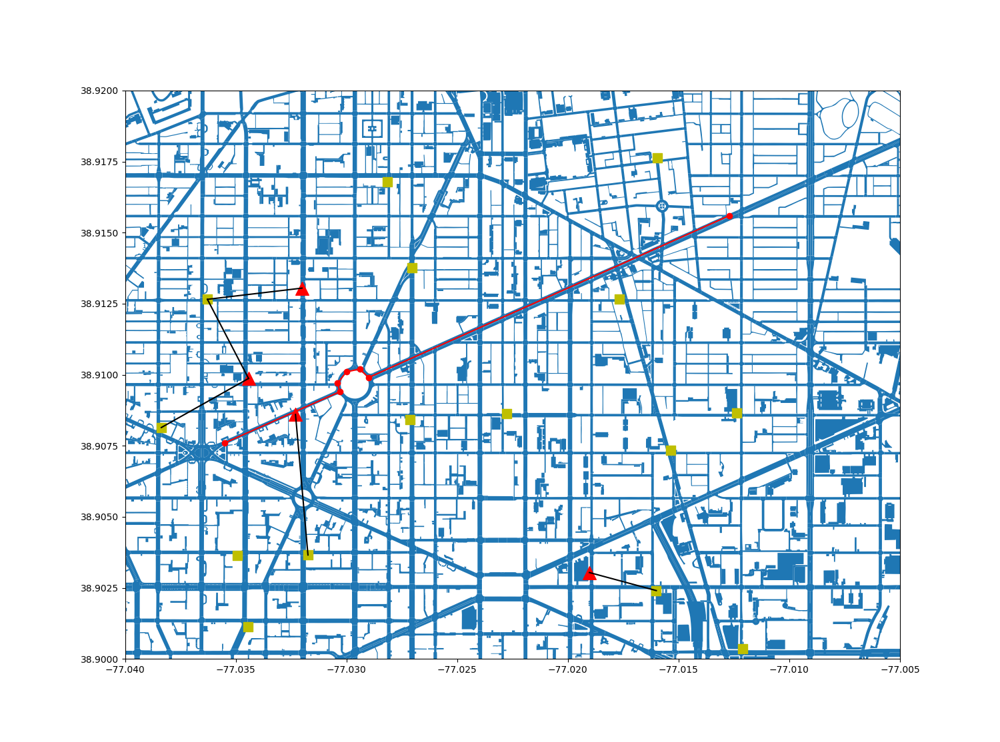

Turning a standard electric scooter into a self-driving, summonable vehicle.
Independent ResearchUniversity of Maryland
Built under Dr. Derek Paley at the University of Maryland, this project retrofits a standard electric scooter with the sensors, compute, and autonomy stack needed to drive itself, and be summoned the same way you'd summon a ride.

The finished scooter platform, fully instrumented and ready for testing
Getting around could be so much simpler
Dockless scooters solved one problem and created another: someone still has to find the scooter, and someone still has to return it somewhere useful. Neither is guaranteed. A scooter that could drive itself back to a charging station, or come find you when you need it, removes both constraints at once.
This project started in September 2019 as a research effort to answer a simple question: what would it actually take to make that work, using hardware you could bolt onto a scooter that already exists, not a vehicle designed from scratch?
The goal was to let someone summon a scooter the same way they'd summon an Uber or a Lyft.

Early prototype, built alongside the initial research team
Building the autonomy stack
I worked on the foundation of the project: some of the earliest prototype units, the core perception and localization pipeline, and a self-righting mechanism developed from first principles, modeled analytically, simulated, built as a prototype, and validated through hardware-in-the-loop testing (patent disclosure completed).
Social Force Model dynamics simulation

Initial Scooter Simulation in gazebo
Early concept, not pursuedFirst self-righting attempt: needed more force and clearance to lift the scooter than the platform could realistically provide
Alongside that, I built an autonomous vehicle test bench integrating perception and localization sensors for SLAM, and directed the research team through data collection, annotation, 3D virtual environment creation, and ongoing optimization of the C++ and Python autonomy codebase.
The autonomy stack
Compute
An NVIDIA Jetson Nano handles onboard processing for the full autonomy stack.
Perception
A ZED stereo camera and an Intel RealSense depth and tracking camera provide the vision data behind SLAM and object tracking.
Localization
GPS, IMU, and visual odometry are fused with an Extended Kalman Filter, estimating position to within 0.5 meters.
Actuation
The scooter's own motor is repurposed and rewired into an ODrive BLDC controller for steering and drive.
Power
Power draws from the scooter's existing batteries directly, no separate power system needed.
Behavior modeling
Multi-agent pedestrian simulations in Vissim analyzed a social-force-theory model of scooter behavior around people.
System architecture
A quick MBSE-style pass at how the subsystems fit together: what talks to what, what power flows where, and where each sensor physically sits on the scooter.
System

Top-level block diagram: sensing feeds state estimation, which feeds the autonomy stack, which commands actuation. Power (dashed) reaches every block from one shared source.
Signal

Signal path from each sensor's native interface (USB3, UART, I2C) through fusion and planning, down to the PWM commands that actually drive the motor.
Power

Every subsystem draws from the scooter's own existing battery pack, no separate power system, split across a 36V motor rail, a regulated 12V/5V rail for compute, and 5V/USB for sensors.
Sensor Placement

Physical sensor placement: cameras forward-facing on the handlebar, GPS at the top of the stem, IMU near the center of mass, and a wheel encoder at the rear wheel, all routed back to the Jetson Nano.
Funding & recognition
This project was supported by an NSF I-Corps award, which funds researchers to validate the commercial potential of a technology through structured customer discovery rather than just building in the lab.
NSF Award #2031566
I-Corps: A Self-Driving Autonomous Electric Scooter. I served as Entrepreneurial Lead, running the project from proposal through stakeholder engagement. View the award on nsf.gov ↗
As entrepreneurial lead, my job wasn't the hardware, it was figuring out whether anyone would actually want this. That meant running 120+ customer interviews across fleet operators, city planners, and riders, and iterating a business model canvas as each round of interviews changed what we thought we knew about the market. Two rounds of investor pitches and industry expert validation later, that work helped secure $50,000+ in grant funding to keep the project going.
Related research: fleet optimization
A separate course project explored a different side of the same problem: once you have a fleet of autonomous scooters (or delivery drones), how do you route them efficiently between depots and ride requests? Working from a published multi-drone delivery paper, I adapted its "pigtailing" concept, letting a vehicle ride along a transit network partway to its destination to save battery, to a shared electric scooter fleet.
Using real station data (GBFS) for a small area of Washington, DC, and a simplified transit network, I built an allocation graph between depots and ride requests to test whether the same optimization would hold for a ground vehicle instead of a drone.


It didn't fully work. The original paper's distance calculations assume an aerial vehicle that can fly in a straight line; a scooter can't, it has to follow actual roads. Using straight-line (Euclidean) distance instead of road-network distance meant the implementation was directionally useful but not a complete or correct model of real scooter routing, a limitation I documented rather than papered over.
Where it stands today
The project reached a working, fully instrumented prototype: a scooter that estimates its own position to within half a meter, drives itself using its own repurposed hardware, and includes a patent-disclosed self-righting mechanism that recovers from a fall without help. The perception and autonomy codebase, and the test bench built around it, gave the wider research team a foundation to keep building on after I moved on to full-time systems engineering work.
Autonomous navigation, running the full perception-to-actuation loop